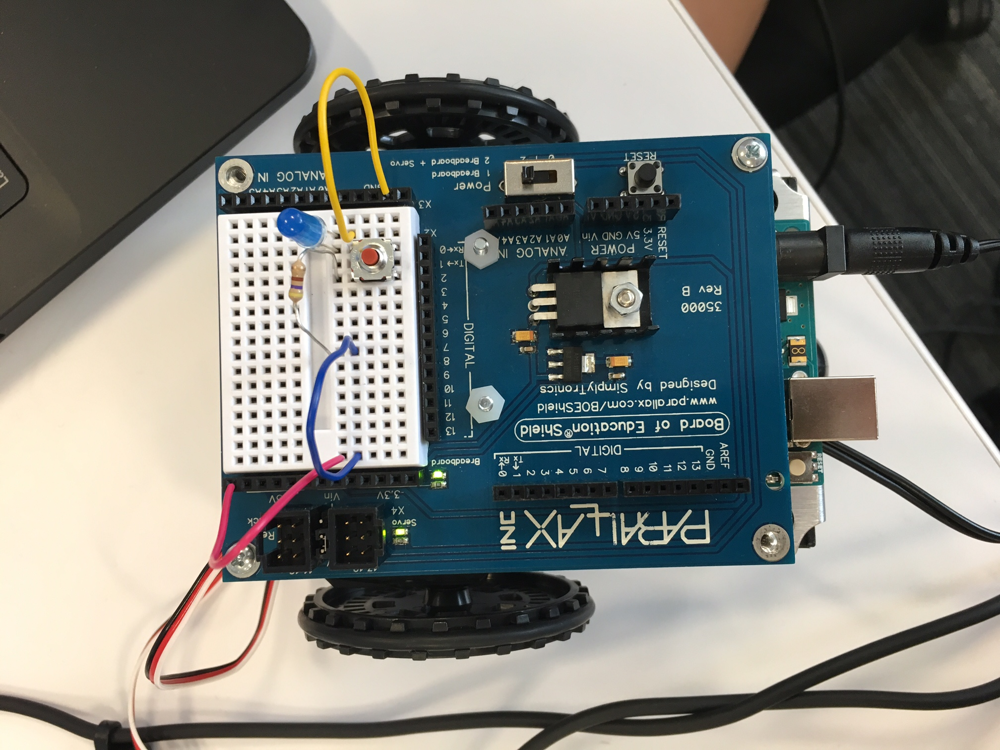

ALL ABOUT ME

My Favorite Websites
One of my favorite websites is Khan Academy "https://www.khanacademy.org" because it has many different things that a student can learn. Also, I like that it isn't based on one topic. It is like a large learning center, and you can learn many academic things.
Another one of my favorite websites is "powerschool.noblenetwork.org" because it helps me keep up with my grades and progresss of how i am doing in school.